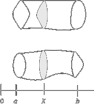

Cavalieri's principle
After Archimede's contribution, little was added to integral calculus unitl Kepler's day, whene a numbner of mathematicians rivived the Archimedean techiniques and attempted to omprove them,. Among these, in addition to Kepler himself, were the Flemish mathematical physicist Simon Stevin (1548-1620) and Bonaventura Cavalieri (1598-1647), a pupil of Galileo and professor at Bologna.
Cavalieri's principle. If two solids of the same width are placed next to each other, say on a table, in such a way that at the same distance x from the origin, the cross-sectional area of the first solid is equal to the correponsing cross-sectional area of the second solid, even though they may be shaped very differently, the volumes of the solids are the same. For example, examine the following figure
Cavalieri's principleis saying that if the shaded aress are the same for each x between a and b regardless of the shape, then the volume of the two solids shown are the same.
To prove this, let A(x) be the area of the cross section of the first solid at a distance x from the origin and let B(x) be the corresponding are of the cross section for the second solid, then we know that A(x) = B(x) for each x between a and b. So, of course it follows that
But the integral on the left side is the volume of the first solid and the integral on the right side is the volume of the second solid. Hence the volume of the two solids are the same.
The same principle can be enunciated for two-dimensional figures.
If two planes figures cut by a set of parallel straight lines intersect, on each of these straight lines, equal chords, the two figures are equivalent, (i.e. of equal area).